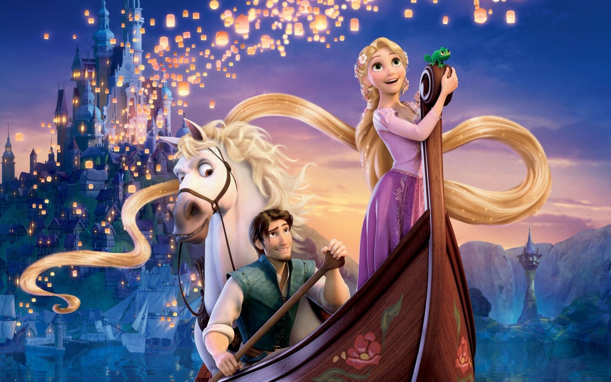

About Rapunzel
디즈니 애니메이션 라푼젤의 주인공으로 치유 능력이 있는 18살 소녀이며, 공주들 중 최초의 마법 능력자다. 라푼젤의 상징이 머리카락인 만큼 마법의 꽃의 영향을 받아 꽃과 같은 색인 금발의 머리카락을 가졌으며, 마법의 힘을 발현하려면 고델이 가르쳐 준 치유의 노래를 불러야 한다.
라푼젤과 친구들
Rapunzel Characteristics
- 호기심이 매우 많고, 세상에 대한 궁금증이 넘쳐나 새로운 것을 알고 싶어 한다.
- 두려움을 무릅쓰고 탑을 나서는 결단력과 어려움 앞에서도 주저하지 않는 용기를 지녔다.
- 힘든 상황에서도 밝은 태도를 잃지 않고, 긍정적인 에너지로 주변 사람들에게도 힘을 준다.
Rapunzel friends
라푼젤의 친구로는 귀여운 카멜레온 파스칼, 처음엔 적이었지만 후엔 든든한 편이 된 말 막시무스, 그리고 함께 모험을 하며 사랑과 우정을 나눈 플린 라이더(유진)가 있다. 또한 겉모습은 무섭지만 꿈을 가진 선술집의 악당들도 그녀의 여정을 도우며 친구가 된다. 이들은 모두 라푼젤의 성장과 자유를 향한 여정에 중요한 역할을 한다.